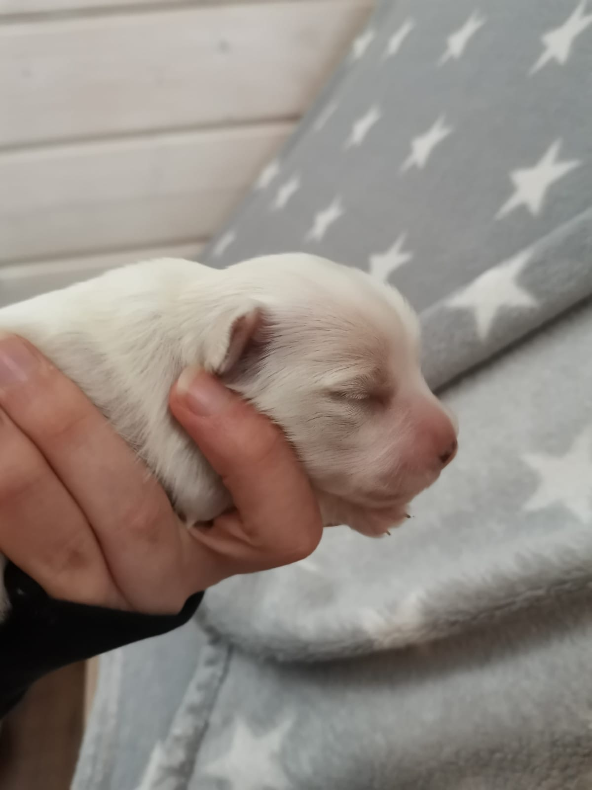
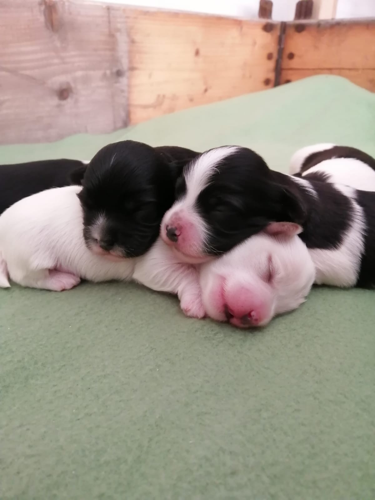
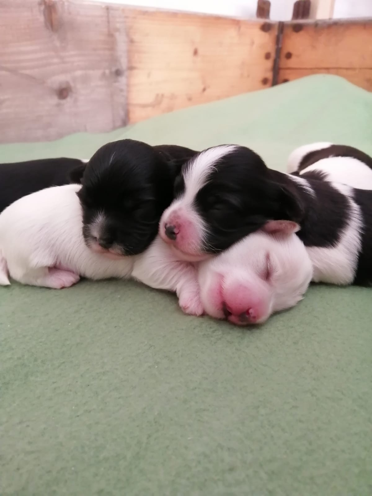
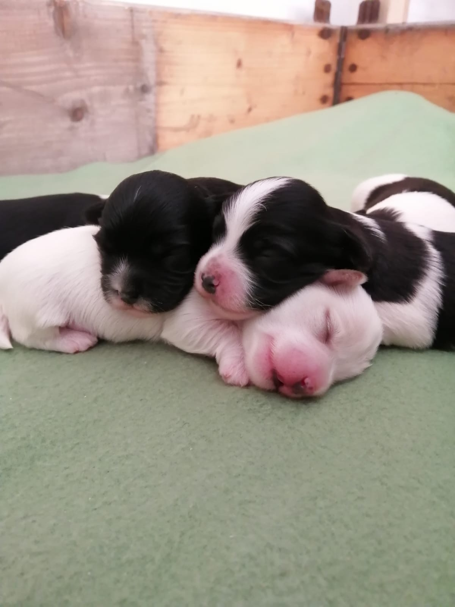

Kuka on Herra Luu?
Ludwig von Drake, aka Ludde on havannankoira, joka asustaa Tampereella. Ensimmäiset viikkonsa Ludde asusti sisarustensa ja Iris-emon kanssa Hinnerjoella. Luddella on kolme veljeä ja yksi sisko samasta pentueesta. Isoveljiä ja -siskoja löytyy aikaisemmasta pentueesta kuusi kappaletta. Serkkuja lienee jumalaton määrä. Ludde on hypoallerginen koira, joten hän kelpaa kaikkien kaveriksi. Väriltään Ludde on valkoinen, korvista löytyy ruskeat laikut. Ludde syntyi äitienpäivänä 10.5.2020.
Muutamia Ludden lempinimiä:
- Herra Luu
- Ludweiser
- Luusteri
- Lutikka
- Ludovic
- Kallis Kusipää
"Kuka on hyvä poika? Kuka on hybä boiboiboibboiii!?"
- Luddesta sanottua

 

